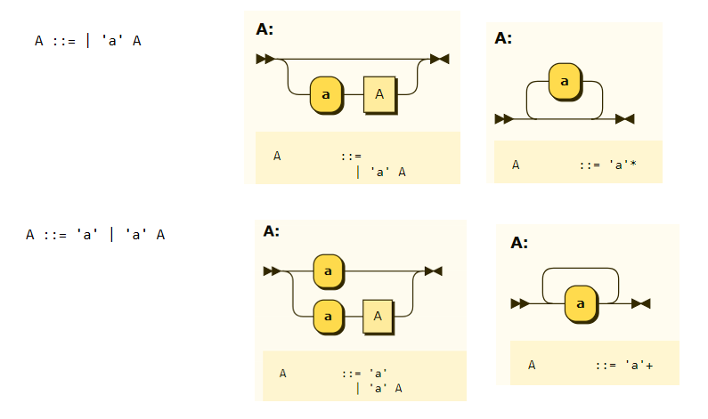

Eine formale Grammatik besteht aus
1. \(V\), einer endlichen Menge von syntaktischen Variablen.
2. \(\Sigma\), einem endlichen Alphabet mit \(\Sigma \cap V = \emptyset \)
3. \(P\), einer endlichen Menge von Produktionsregeln
4. \(S\), einer Startvariablen aus \(V\).
Die Symbole aus \( \Sigma \) werden Terminale genannt, die Symbole aus \(V \) Nichtterminale.
Die Grammatik definiert eine formale Sprache aus allen Wörtern, die nur Terminale enthalten und ausgehend von S durch eine endlichen Anzahl von Anwendungen von Regeln aus P abgeleitet werden können.
Welche Sprache wird durch die folgende Grammatik erzeugt?
\(V = \{S\}, ~~ \Sigma = \{0,1\} \)
Produktionsregeln: \( S \rightarrow 01, ~~ S \rightarrow 0S1 \)
Leite das Wort \(aababa\) aus der folgenden Grammatik ab:
\(V = \{S,A,B\}, ~~ \Sigma = \{a,b\}\)
\(P: S \rightarrow AB, ~A \rightarrow aS|a, ~B \rightarrow bA \)
Jede Grammatik ist automatisch vom Typ 0, d.h. die Produktionsregeln sind keiner Beschränkung unterworfen.
Eine Grammatik ist vom Typ 1 oder kontextsensitiv, wenn für alle Produktionsregeln \(w_1 \rightarrow w_2\) gilt: \(\left|w_1\right| \le \left|w_2\right|\).
Eine Grammatik ist vom Typ 2 oder kontextfrei, wenn jede Produktionsregel die Form hat \(A \rightarrow w \), d.h. die linke Seite besteht aus einem Nichtterminal.
Eine Grammatik ist vom Typ 3 oder regulär, wenn die Produktionsregeln die Form \(A \rightarrow bC | b \) haben, d.h. die rechte Seite besteht entweder aus einem Terminal oder aus einem Terminal+Nichtterminal (rechtslinear).
Typ-3 Sprachen sind die regulären Sprachen, die durch einen DEA erkannt bzw durch einen regulären Ausdruck beschrieben werden können.
Typ-2 Sprachen sind die kontextfreien Sprachen, die von einer kontextfreien Grammatik erzeugt werden und durch einen Kellerautomaten erkannt werden.
Programmiersprachen sind in der Regel kontextfrei. Die Produktionsregeln für Programmiersprachen werden häufig in Form von Syntaxdiagrammen oder in der erweiterten Backus-Naur-Form (EBNF) geschrieben.
In der erweiterten Backus-Naur-Form (EBNF) wird der Produktionspfeil durch ::= ersetzt und alle Zeichenketten aus Terminalsymbolen werden in Hochkommata gesetzt. Außerdem gibt es weitere Ausdrucksmittel für Wiederholungen und Optionen.
A? : A optional, A+ : mindestens ein A, sonst beliebig A* : beliebig viele A B : Konkatenation A | B : A oder B (aber nicht beide)
Syntaxdiagramme (Eisenbahndiagramme) stellen die Regeln der Grammatik durch Graphen dar. Die Knoten mit abgerundeten Ecken stehen für Terminale, die rechteckigen für Nichtterminale. Jeder mögliche Pfad durch das Diagramm entspricht einer Ableitung.
Der Railroad Diagram Generator wandelt eine eingegebene EBNF in ein Syntax-Diagramm um.

Entwirf eine kontextfreie Grammatik, die die Sprache
\( \{a^jb^kc^l~|~j,k,l \in \mathbb{N}_0, j > l\} \) über dem Alphabet
\(\Sigma = \{a,b,c\} \) erzeugt.
Gib dazu die Produktionsregeln, EBNF und Syntaxdiagramm an.
Das Python package tracery (pip install tracery) erlaubt das Generieren zulässiger Wörter zu einer Grammatik: Beispiel